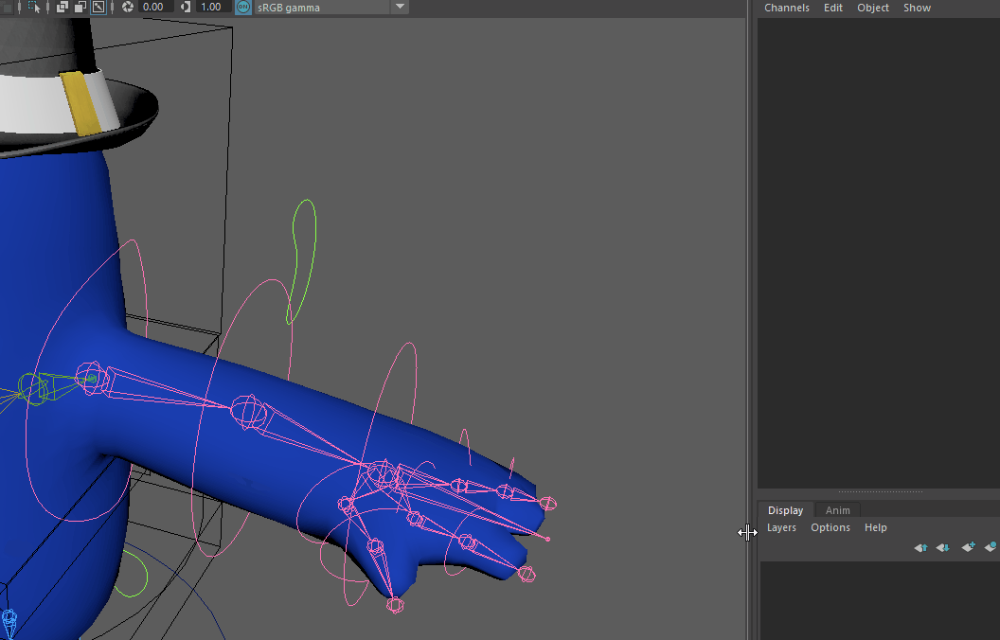
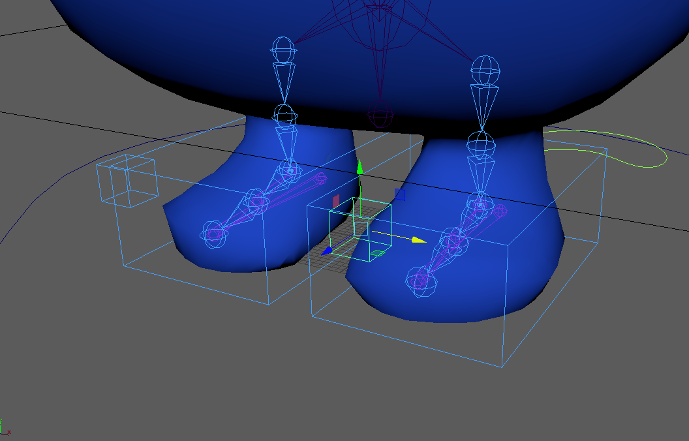
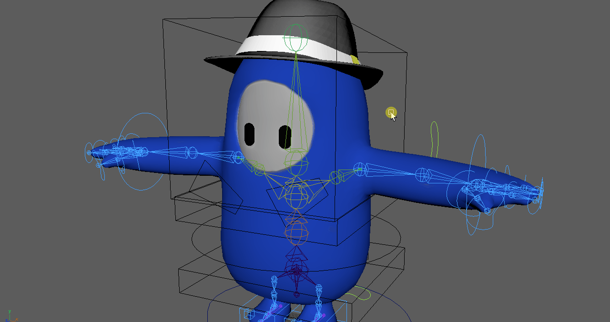
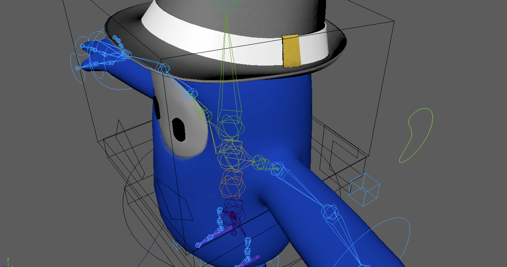
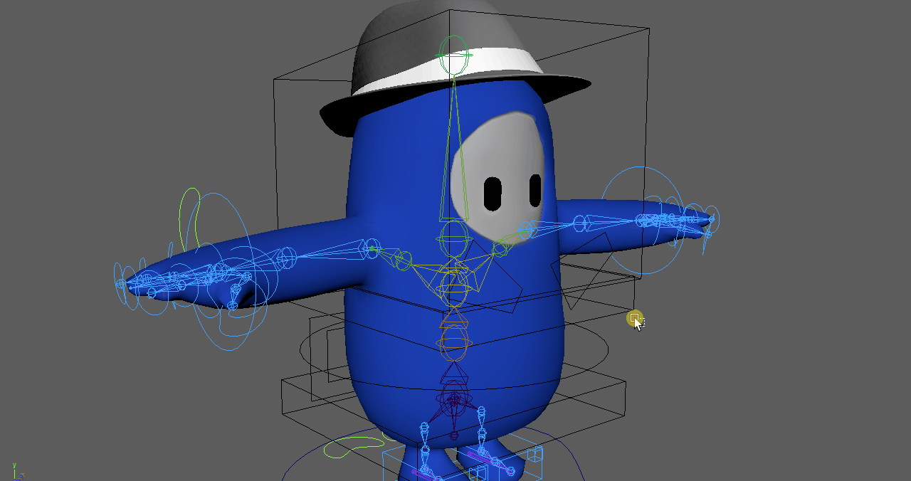
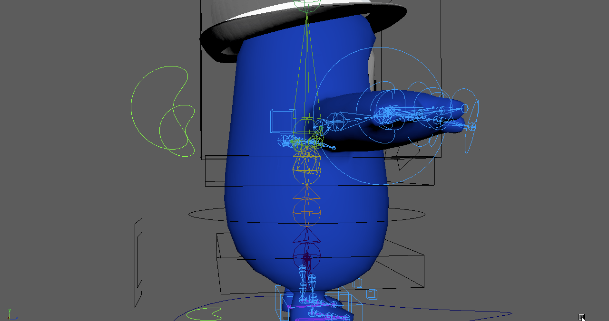
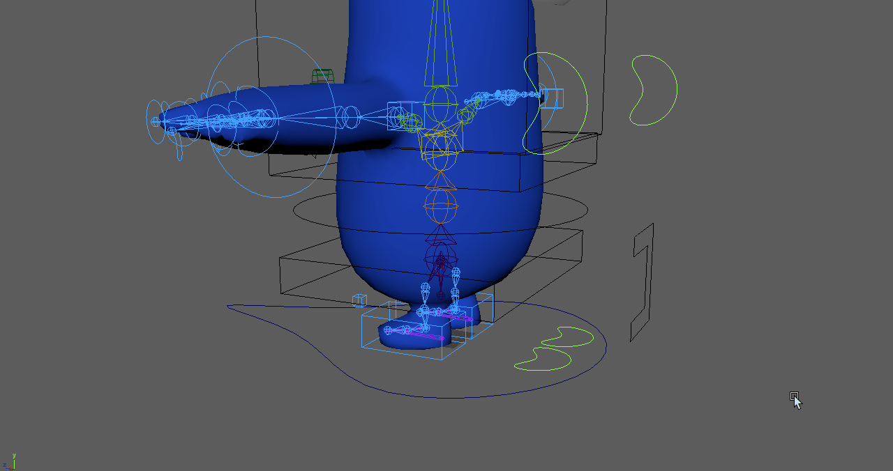
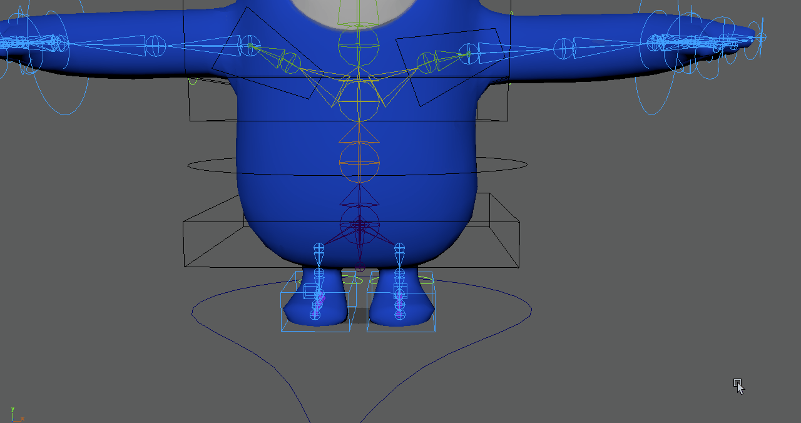
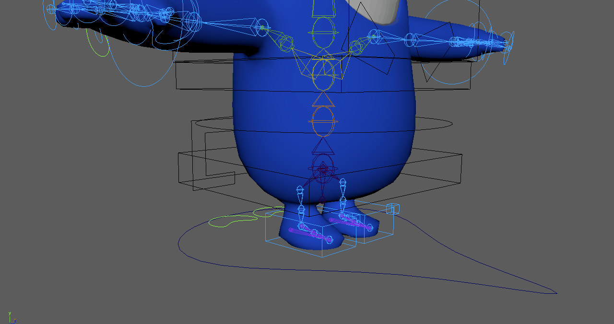

Es necesario conocer el funcionamiento del rig para poder animarlo, por lo cual dedicaré este espacio para explicar cómo utilizarlo. Veamos cómo quedó el rig del personaje.

Dejemos algo muy en claro, si por alguna razón desacomodan un controlador no tendrán qué hacer gran cosa para regresarlo a como estaba antes. El rig está hecho de forma en que al poner todos los valores del controlador en 0, éste regresará
a su posición original.
Ahora si, ahondemos en cómo se segmentó el rig; los controladores se dividen en 4 colores para identificar qué parte del cuerpo se moverá. Los colores y partes son las siguientes:
- Verde para los switches del IK/FK de cada brazo y pierna.
- Azul para los controladores IK de los brazos y piernas.
- Rosa para los controladores FK de brazos y piernas.
- Negro para los controladores del centro del cuerpo.
Los huesos de IK y FK también están pintados de color azul y rosa respectivamente. Por último, vale la pena mencionar que los "huesos base" o "neutrales" están pintados de color amarillo para ver que siguen a los huesos IK o FK dependiendo de cómo esté prendido el switch. Vaya, si el switch verde hace que aparezcan los IKs, será posible ver a los huesos amarillos siguiendo a los azules del IK, mientras que si el switch está puesto para que aparezcan los FKs, el esqueleto amarillo seguirá a los huesos rosas. Fácil, ¿no?
Comencemos por comprender dónde están los controladores rosas. Están escondidos, por lo cual, como ya mencioné antes, para verlos será necesario seleccionar los switches verdes que están posicionados atrás del personaje y modificar
el valor "IK FK Switch" a 0 para animar los FKs y a 1 para los IK
Sabiendo cómo funciona el primero de los cuatro colores, profundicemos en el resto de controladores uno por uno.
IKs
Los IKs son los controladores más sencillos de explicar debido a que simplmente requieren que traslades y/o rotes un controlador. Dicho controlador será un círculo que estará posicionado en las muñecas del personaje o un cubo que verás alrededor del pie.

Además del controlador del IK, se incluyó un controlador en forma de cubo con un constraint Pole Vector, por lo que será posible hacer que los codos y rodillas se apunten hacia donde decidas posicionar este cubito
Se incluyó la funcionalidad de Stretch a los IKs, por lo que será posible mover los brazos y piernas más allá de lo que debería de ser posible; las extremidades se estirarán para dar un toque cartoony a las animaciones. Podemos verlo
a continuación.
Antes de pasar a los controladores FKs, he de agregar que aunque estos controladores sean IKs, se agregaron controladores de tipo FK a los dedos para poder cerrar la mano. Estos FKs tienen constraints de tipo orient, por lo que solo
será posible rotarlos, pero servirán para cerrar el puño con los dedos. No los veremos aún ya que sería algo que se repetiría en el tema de los FKs, por lo que tendrán que seguir leyendo para saberlos utilizar.
FKs
Ya vimos cómo se usan los IKs que, en mi opinión, facilitan mucho el movimiento de los brazos y piernas. Sin embargo, en caso de que seas un subnormal y prefieras (o necesites) rotar cada articulación a manita, el rig incluye esta funcionalidad en un agradable color rosa.
 Well, damn! Those are TOO MANY controllers
Well, damn! Those are TOO MANY controllers
Una vez hayan cambiado el switch a 0, se mostrarán los controladores FK del brazo o pierna que le corresponda. Como pueden ver, aparecerá un controlador para cada articulación.
En el caso del brazo, los controladores que podrán
rotar los huesos son:
- Shoulder
- Elbow
- Wrist
- Articulacion a del dedo
- Articulacion b del dedo
Mientras que en el caso de la pierna los controladores que tienen orient constraints son:
- Leg
- Knee
- Ankle
Como es visible en el gif, para mover cada articulación es necesario seleccionar el controlador FK que le corresponde. Sin embargo, para fines prácticos, es posible seleccionar varios controladores al mismo tiempo y rotarlos juntos, ¿para qué? Pues, al hacer una selección múltiple se obtiene un movimiento más fluido, similar a un látigo.
Para ver cómo lograr este efecto explicaré un ejemplo práctico. Se necesita seleccionar un controlador (como la muñeca en este caso), junto con todos sus hijos que se pueden rotar (los dedos son hijos de la muñeca).
Una vez seleccionados todos los controladores, sencillamente hay que pulsar la letra W para usar la herramienta de rotación y mover los huesos con el mouse.
Es posible aplicar este mismo principio para mover el brazo en su totalidad, así como las piernas a partir de la rodilla o a partir del controlador más alto.
Muy bien, ahora que entendimos cómo mover los FKs de manera
individual
y de otra manera más natural, podemos pasar al uso de los controladores del cuerpo central.
Controladores del centro del cuerpo
Vamos a hacer esto de manera breve y sencilla. Todos los controladores negros son orient constraints, por lo que únicamente se podrán rotar. ¿Qué parte rotará? Me parece que es un poco obvio considerando dónde se encuentra cada controlador pero ahí les va:
Cabeza
Hombros
Pecho
Espalda
Centro de gravedad
Pelvis
Listo, eso es todo lo que hay que saber respecto al movimiento de los controladores, sin embargo, la cabeza tiene atributos añadidos para modificar el estado de ánimo de los ojos. Se los explicaré con el siguiente GIF.
Para aprovechar los atributos de los ojos, simplemente necesitas seleccionar el controlador de la cabeza y modificar el valor de enojado, feliz, triste o parpadeo a 1.
Como se puede ver en la imagen de a la izquierda, los ojos cambiarán acorde al estado de ánimo puesto en 1.
C'est fini
Eso es todo lo que se tiene que saber para utilizar este rig intermedio. Finalizo este manual con un pequeño gif de la animación con los IKs que hice una vez lo terminé. Hope it helped!
